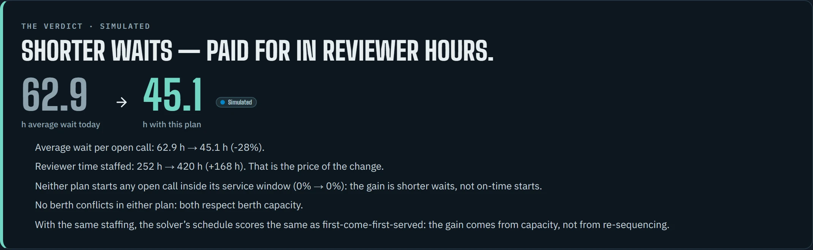

BerthIQ
Why is this
Port-call decision support
Why is this
ship waiting?
Replay a week at Khalifa Port, see what held each ship, and test a fix before the port changes anything.
Open the live app berth-iq.vercel.app →

17 of 26open calls
at riskPredicted
at riskPredicted
Synthetic operations on real port geography · map © OpenStreetMap